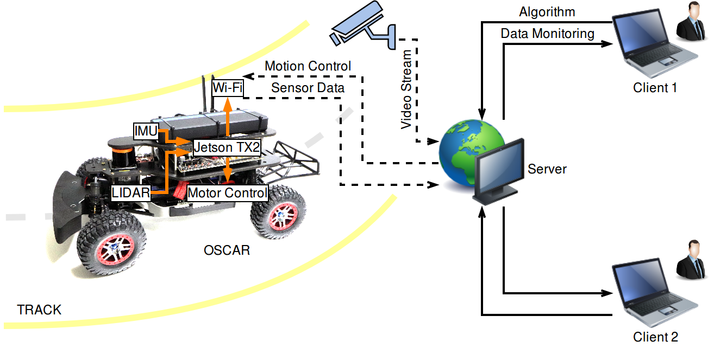

The remote laboratory extends the accessibility of OSCAR. It consists of the following components:
 Remote laboratory setup
The track in the remote laboratory is constructed to resemble a real road. We are using dark floor with yellow lanes to enable testing lane detection-based driving. Various sites are placed along the driveway to provide landmarks for localization with both LIDAR and an on-board camera. They include buildings of different sizes with different surface patterns, traffic cones, traffic barriers and traffic signs, all appropriately scaled for the OSCAR scaled platform.
A monitoring system is needed to mimic a Global Positioning System (GPS). Wide-angle cameras are installed above and alongside the track to monitor car’s movement. We are using Hikvision fixed dome network cameras because they provide wide angle of view and are easily setup to stream video over network.
The remote laboratory is integrated into the OSCAR IDE. Remote clients can select a set of sensor inputs to use for their computations to generate an output of motion control commands. Users can collect real-time sensor data from the OSCAR platform while monitoring a video stream from cameras installed in the laboratory.
The server manages requests from remote clients and the data transmission in FIFO manner. That is, only one client can perform the experiment at a time. When a client is authorized, the server grants access to the remote laboratory or queues the request.